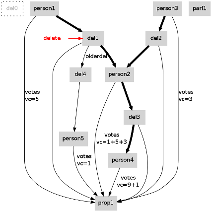
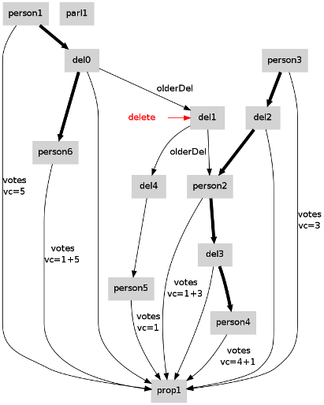
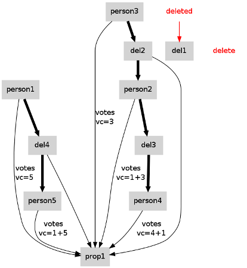

Representing Delegations (proposal level)
All delegations created by a user are immediately representated (redundantly) on
the proposal-level. In the following, this proposal-level representation is
described.
An example situation

- The thick arrows mark the transitive delegations.
- "person1" delegates "person2" for "prop1". Suppose that -- caused by
other delegations (not depicted in this graph) -- "person1" has "vc=5", i.e. a
vote count of 5 in voting "prop1".
- Note that there has been an older delegation "del4" to "person5" for "prop1",
which has been overwritten by "del1".
- "person3" delegates "person2" for "prop1". Suppose that -- caused by
other delegations (not depicted in this graph) -- "person3" has "vc=3", i.e. a
vote count of 3 in voting "prop1".
- In consequence, "person2" has "vc=9" (1 for his own vote, 5 for the delegation
by "person1" and 3 for the delegation of "person3".
- "person2" delegates "person4" for "prop1".
In order to describe a dynamical view, the situation after adding a delegation
and the situation after deleteing a delegation is described.
Situation after Adding a Delegation

- "person1" added a new delegation "del0" which overwrites "del1"
- the older delegation is kept in a kind of stack formed by "olderDel"-edges.
- In consequence "person2" looses "person1"s votecount of 5. (This votecount is
now given to "person6".
- In (transitive) consequence, "person4" also looses "person1" votecounts.
Situation after Adding a Delegation

- delegation "del1" is deleted. If there is an "olderdel"-edge (which holds in
this case), i.e. if there are older delegations in the stack, the recent
delegation is restored.
- Each delegation in this stack is always a delegation for the same proposal (in
this case for "prop1".
- In this case, "del4" is restored which delegates "person5" for "prop1".
- In consequence, the votecount of "person5" increments by 5, and the votecounts
of "person2" and (transitively) of "person4" decrements by 5.